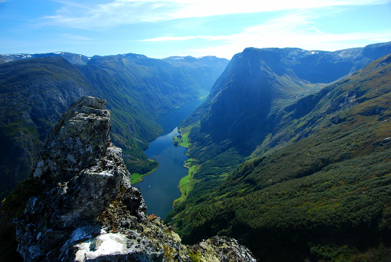

Пример №1


Пример №2


WebP — формат сжатия изображений с потерями и без потерь качества, предложенный компанией Google Inc. в 2010 году.
По данным HTTP Archive, изображения в среднем занимают до 64% веб-страницы. Учитывая это, оптимизация изображений — крайне важный аспект, особенно принимая во внимание то, что многие пользователи просто уйдут с сайта, если он не загрузится за несколько секунд. Проблема с оптимизацией изображений в том, что мы хотим сохранить размер изображений, не жертвуя при этом качеством. Предыдущие попытки создать типы файлов, которые бы оптимизировали изображения лучше, чем стандартные JPEG, PNG и GIF, успеха не возымели.
Согласно Google:
Сжатие состоит из двух этапов. На первом делается попытка «предсказать» содержимое одних блоков по уже декодированным (три блока над текущим и один блок слева от него), на втором кодируется ошибка предсказания. Блоки отрисовываются в порядке слева направо и сверху вниз. Режимы предсказания работают с 3 размерами макроблоков.
Пример №1 |
||
| Формат JPEG | Формат png | Формат WebP |
|
|
|
| Разрешение 1024*752 | Разрешение 1024*752 | Разрешение 1024*752 |
| Размер JPEG 120 Кбайт | Размер Png 1,58 Мбайт | Размер WebP 80,7 Кбайт |
Пример №2 |
||
| Формат JPEG | Формат png | Формат WebP |
|
 | |
| Разрешение 550*368 | Разрешение 550*368 | Разрешение 550*368 |
| Размер JPEG 43,8 Кбайт | Размер Png 366 Кбайт | Размер WebP 29,6 Кбайт |
Теперь возьмем исходник в Png без потери качества и конвертируем его в формат WebP и JPEG, затем поробуем подогнать их под один размер (изменяя процент сжатия).
Очень перспективный формат от Google, но и он не лишен недостатков. Очевидное преемущество это наличие альфа канала.
| Преимущества | Недостатки |
| Меньший размер файла | Плохая поддержка браузерами |
| Улучшенный алгоритм сжатия | Искажение имеет пластиковый вид |
| Более качественный переходы цвета | Неудобный интерфейс экспорта |
| Маска альфа-канала |
P.S. Стандарт кодирования изображений WebP нельзя назвать новым, его представила Google в уже далёком 2010 году. Однако всё это время использование его было сильно ограничено из-за того, что разработчики браузеров имели собственное мнение по поводу того, какой новый формат изображений должен поддерживать их браузер. Но скоро ситуация изменится, т. к., наконец, поддержка WebP появится на подавляющем большинстве браузеров. Но стандарт WebP рискует стать популярным, будучи уже устаревшим, ведь его конкурент — AVIF, поддерживаемый альянсом большинства разработчиков браузеров, уже в активной разработке.